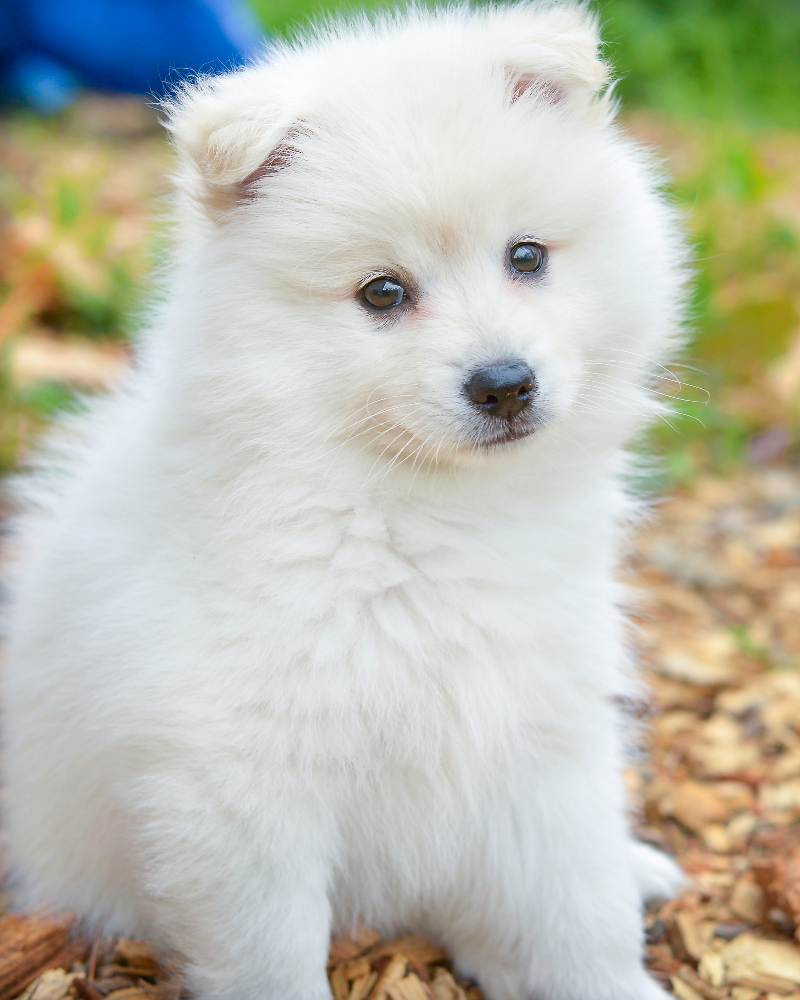

The Golden Retriever is a sturdy, muscular dog of medium size, famous for the dense,
lustrous coat of gold that gives the breed its name.
The broad head, with its friendly and intelligent eyes, short ears, and straight muzzle, is a breed hallmark. In motion,
Goldens move with a smooth, powerful gait, and the feathery tail is carried, as breed fanciers say, with a “merry action.”.

The Bolognese is small, stocky, and squarely built. He is rather serene and inactive,
and devoted to his master and his people. They can be shy towards strangers,
but warm up quickly if they are properly socialized.

Shi Tsu (pronounced in the West “sheed-zoo” or “sheet-su”; the Chinese say “sher-zer”),
weighing between 9 to 16 pounds, and standing between 8 and 11 inches, are surprisingly solid for dogs their size.